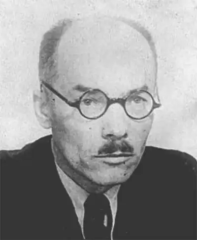

Степан Тудор народився 25 серпня 1892 року у священицькій родині. Змалку пережив матеріальну скруту, раннє заробітчанство. 1914 року його, студента першого курсу Львівського університету, мобілізовують до австро-угорської армії. На фронті потрапив у російський полон, що спричинило перебування С. Олексюка в Наддніпрянській Україні (вчителював у с. Березняки теперішньої Черкаської області).
Повернувшись до Галичини (1923), активно пропагує ідеї марксизму радянського штибу. Закінчив філософський факультет Львівського університету (1926), працював учителем у Чорткові, але не ужився з владою ("комуністичний агітатор"). З 1927 року включився в літературну й політичну боротьбу — зокрема, як один з організаторів журналу "Вікна", органу львівських письменників лівої орієнтації, згодом об'єднаних у спілку "Горно".
Час минав у конфліктах з поліційним управлінням та судовою владою, що притискали журнал "Вікна", співредактором (разом з Василем Бобинським), а згодом і редактором якого був С. Олексюк. Після закриття часопису у 1932 зазнав вигнання до Золочева. Після 17 вересня 1939 брав участь у розподілі панської землі між селянами. У жовтні — депутат Українських Народних Зборів Західної України у Львові. 1939-1941 — у Львові брав участь у створенні та керівництві місцевим відділенням Спілки радянських письменників України. У день нападу Німеччини на СРСР (22 червня 1941) загинув разом зі своєю дружиною і групою лівих галицьких письменників (Олександр Гаврилюк із дружиною, Францішек-Станіслав Парецький та Зоф'я Харшевська) у Львові від випадкового влучання німецької авіабомби.